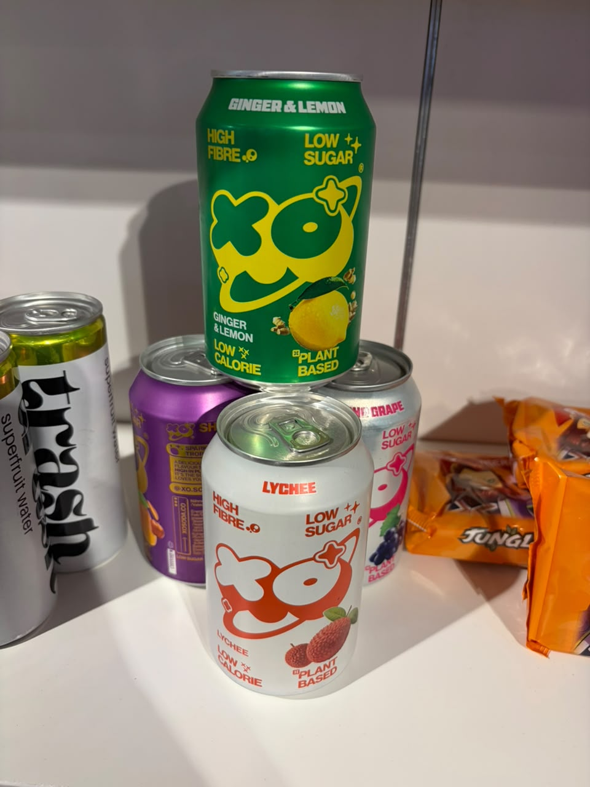
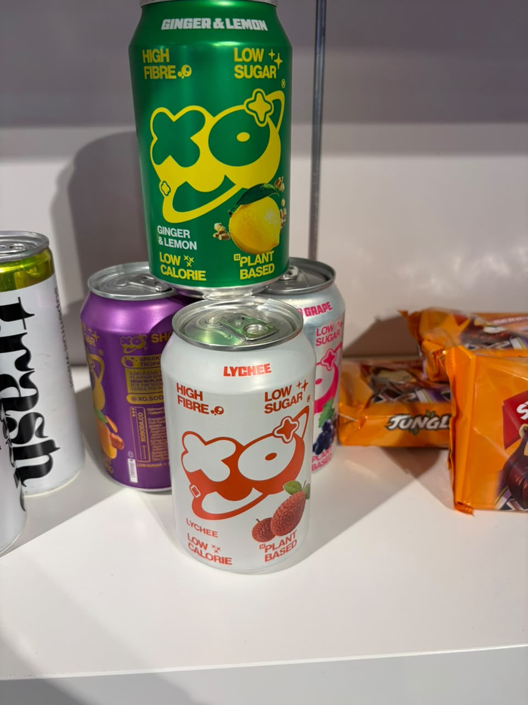

trash
مشروبات فاكهة الكاكاو
الوكيل الحصري في السعودية
لم يُعثر في البحث العام على دليل موثوق يثبت وجود وكيل حصري لهذه الشركة في السعودية أو ينفيه. لا تُعدّ السوق متاحة حصريًا قبل رد الشركة.
- الجهة
- لم تُثبت جهة سعودية محددة
- نطاق الدليل
- trash
- تاريخ البحث
- 21 أكتوبر 2026
الخطوة التالية: طلب تأكيد مكتوب باسم الوكيل، ونطاق السعودية، والعلامات والأصناف وقنوات البيع، وسريان الحصرية.
النتائج العامة محدودة، وتعذر استخراج محتوى كافٍ من الموقع المرجعي؛ النتيجة غير محسومة وتحتاج رد الشركة.
المصادر وطريقة التحقق
- الموقع المرجعي للشركة / صفحة التواصل
مرجع للاستفسار المباشر؛ ليس شهادة بعدم وجود وكيل.
بحث باسم الشركة والعلامات مع السعودية والتوزيع والوكالة، ومراجعة المصادر العامة المتاحة. لم يتم التواصل مع الشركة أو الاطلاع على عقد وكالة.
المنتجات والمجال
- علبة trash تحمل وصف superfruit water على جانبها
بطاقة الملف
الجناح
غير ظاهر في الصور
العنوان
غير موضح
حالة المتابعة
بيانات مجمعة — لم يبدأ التواصل من هذا الملف
وسائل التواصل
Paul Abley
Director of Community, Events and Partnerships
بطاقة الأعمال في الصورة 42؛ جهة تعريف بالعلامات وليست مسؤول مبيعات كل علامة
استفسارات تجارية
استفسارات تجارية
https://www.linkedin.com/company/trashdrinks
طلبات التوزيع
طلبات التوزيع
https://www.linkedin.com/company/trashdrinks
ملاحظات الملف
الاسم والوصف مقروءان جزئيًا على عبوة جانبية. الاسم القانوني والمكونات والاتصال المباشر غير متوفرة؛ يلزم تأكيدها عبر جهة الجناح قبل أي تعامل.
أوصاف المنتجات والفوائد الواردة على العبوات منسوبة للمصنع، وليست تقييمًا طبيًا أو اعتمادًا للتوريد.
الصور وبطاقات الأعمال
اضغط على الصورة لفتح الأصل بالحجم الكامل.



